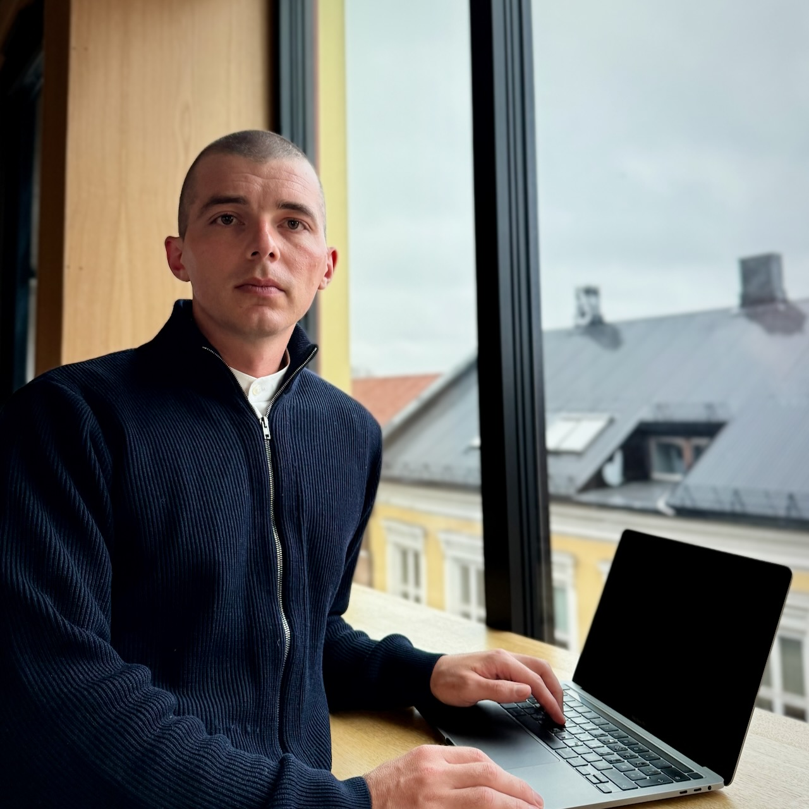

Richard Aubrey White, Ph.D.
Richard is an applied statistician with a Ph.D. in biostatistics from Harvard University.
As a senior researcher, he leads the Norwegian Syndromic Surveillance System (NorSySS) at the Norwegian Institute of Public Health, developing real-time systems to monitor population health and detect outbreaks. NorSySS conducts over one million automated analyses daily, tracking more than 100 disease syndromes across Norway’s five million residents.
His work focuses on syndromic surveillance, signal detection algorithms, and the design of real-time reporting systems for public health operations. Combining statistical modeling with operational epidemiology, he builds infrastructure that supports health authorities nationwide.
From 2015 to 2022, he served as statistical lead for the Norwegian Mortality Monitoring System (NorMOMO), conducting weekly analyses of all-cause mortality data for Norway and contributing to the European monitoring system for total mortality (EuroMOMO).
His international field experience includes performing needs assessments in Sri Lanka and developing/managing surveillance systems for Ebola in Sierra Leone, acute watery diarrhea/cholera in Mozambique, and maternal health in Palestine.
Contact: hello@rwhite.no

Education
Harvard University, USA
- 2011–2012 / Ph.D. in Biostatistics
- 2009–2011 / M.A. in Biostatistics (Frank Knox fellowship)
University of Wollongong, Australia
- 2005–2009 / B. Advanced Mathematics in Applied Statistics (First Class Honours)
University of Bergen, Norway
- 2022–2023 / One year program (årsstudium) in Nordic languages and literature
Key Publications
White, R. A. et al. (2024). “Aberrations in medically certified sick leave and primary healthcare consultations in Norway in 2023 compared to pre-COVID-19-pandemic trends”. In: Archives of Public Health 82.1, p. 187. ISSN: 2049-3258. DOI: 10.1186/s13690-024-01411-4. URL: https://www.rwhite.no/articles/2024-white.pdf.
Wickremesekera, S. et al. (2022). “Sri Lanka Complex Emergency - Needs Assessment Report, October 2022”. In: International Federation of Red Cross and Red Crescent Societies. URL: https://www.rwhite.no/articles/2022-wickremesekera.pdf.
Key Projects
Norwegian Syndromic Surveillance System (NorSySS)
Senior Researcher/Project Manager, 2023–now
Leading Norway’s national syndromic surveillance system that monitors 100+ disease syndromes through automated analysis of GP consultations. The system processes over 1 million analyses daily, providing real-time disease monitoring across all Norwegian municipalities and alerting health authorities to potential outbreaks. Promoted from Researcher to Senior Researcher in May 2025.
Sykdomspulsen: Real-Time Disease Surveillance
Researcher/Technical Lead, 2019–2023
Built and led an 8-person team developing Norway’s award winning comprehensive disease surveillance platform. Created automated statistical analyses for mortality monitoring (as part of EuroMOMO), COVID-19 surveillance, and 80+ infectious disease syndromes, generating 1000+ daily reports for health authorities.
Core Surveillance 9 (cs9) Framework
Senior Researcher/Lead Developer, 2014–now
Developing cs9, an open-source R framework that serves as the foundational infrastructure for large-scale disease surveillance systems. This comprehensive platform enables rapid deployment of automated surveillance capabilities and serves as the technical backbone powering both NorSySS and award winning Sykdomspulsen as independent surveillance implementations. Promoted from Researcher to Senior Researcher in May 2025.
Technical Skills
Programming & Analysis
R (20+ years) • STATA (15+ years) • Python (1 year)
Infrastructure & DevOps
Docker (10+ years) • CI/CD (10+ years) • Kubernetes (1 year)
Languages
English (Fluent) • Norwegian (B2)
Scientific Production
Scientific articles
99 publications • 69 115 citations • 46 h-index
R packages on CRAN
R packages on GitHub
Professional Experience
Norwegian Institute of Public Health (NIPH/FHI)
Senior Researcher/Project Manager — Norwegian Syndromic Surveillance System (NorSySS)
02.2023–now / Oslo, Norway
- Promoted from Researcher to Senior Researcher in May 2025.
- Project manager for NorSySS, a surveillance system of infectious diseases based on consultations with general practitioners and out-of-hours primary care facilities.
- Complex statistical analyses automatically run for all locations in Norway, producing reports and alerting various stakeholders.
- Technology stack: R, Kubernetes, Docker/Podman, CI/CD (Jenkins/GoCD/ArgoCD), Apache Airflow, Core Surveillance 9 (cs9).
- Scale: Surveils 100+ syndromes across all Norwegian municipalities.
- Organized the 2023 Northern European Symposium on Automated Surveillance.
Researcher/Technical Lead — Sykdomspulsen: Real-Time Surveillance
07.2019–01.2023 / Oslo, Norway
- Tech lead for award winning Sykdomspulsen (8-person team), a real-time analysis and disease surveillance system.
- Complex statistical analyses automatically run for all locations in Norway, producing reports and alerting various stakeholders.
- Responsible for training, mentoring, supervision, and quality assurance of statistical methods and code.
- Technology stack: R, Kubernetes, Docker/Podman, CI/CD (Jenkins/GoCD/ArgoCD), Apache Airflow, Core Surveillance 9 (cs9).
- Surveillance areas:
- Mortality monitoring: All cause/cause-specific/attributable mortality (part of EuroMOMO network), vaccine associated mortality.
- Infectious diseases: COVID-19, influenza, tuberculosis, IPD, meningococcal disease, pertussis.
- Additional monitoring: Antibiotic use, gastritis, 80+ syndromes via NorSySS.
- Scale: 1,000,000+ analyses per day, 1,000+ automatic reports (PDF/Excel/email/SMS) per day.
- Interactive website for municipal health authorities and APIs for internal/external use.
Researcher — Infectious Disease Epidemiology
06.2014–06.2019 / Oslo, Norway
- Advised outbreak teams and researchers in statistical concepts, methods, and programming.
- Statistical supervision:
- Five EPIET fellows.
- Nine Ph.D. students.
- Focus: Mentoring, quality assurance of statistical methods and peer-reviewed publications.
- Key research projects:
- Data monitoring committees:
- Head statistician for PEEP RCT (Haydom, Tanzania).
- Head statistician for Safer Births Moyo RCT (Muhimbili, Tanzania).
- Surveillance systems:
- Gastritis/respiratory outbreaks (NorSySS).
- Notifiable disease outbreaks (MSIS).
- Mortality monitoring (EuroMOMO).
- Developed interactive websites and signal processing infrastructure.
Postdoctoral Researcher — Genes and Environment
01.2012–05.2014 / Oslo, Norway
- Developed database management structures to allow for the construction of analysis datasets from multiple disparate sources (e.g. written questionnaires, lab toxicant concentrations, Illumina microbial data).
- Investigated the relationship between seasonality, sunlight, and suicide.
- Investigated the relationship between gun ownership and completed suicide in the US, highlighting the lack of method substitution where gun ownership is less prevalent.
Consortium for Statistics in Disease Surveillance (CSIDS)
Chairperson
01.2023–12.2025 / Oslo, Norway
- Overseeing the collaboration between statisticians, epidemiologists, and researchers, working on the development of R packages used for disease surveillance.
Norwegian Red Cross (NorCross)
Head Statistician (IFRC)
04.2024–05.2024 / Oslo, Norway
- Head statistician (remote) for a 1800-household multi-sector nationwide needs assessment, in response to the complex humanitarian emergency in Sri Lanka.
- Developed statistical protocol for all sectors, and analyzed most of the data
Health Officer (IFRC)
08.2022–09.2022 / Colombo, Sri Lanka
- Head statistician for a 3100-household multi-sector nationwide needs assessment (annex), in response to the complex humanitarian emergency in Sri Lanka.
- Developed statistical protocol for all sectors, questions for the health sector, and analyzed most of the data.
Community Based Surveillance Delegate (IFRC)
04.2019–05.2019 / Beira, Mozambique
- Responded to the cholera outbreak in Beira caused by Cyclone Idai.
- Managed a real-time surveillance system for people with diarrhea visiting Red Cross oral rehydration points.
- Liaised with the MOH on issues of interest, such as serious cases of diarrhea and self-reported bloody diarrhea.
Norwegian Scientific Committee for Food and Environment (VKM)
External Expert — Next Generation Risk Assessment in Practice
01.2023–12/2023 / Oslo, Norway
- Developed statistical protocol for the evaluation of INVITES-IN, a tool for assessing the internal validity of in vitro studies.
Palestinian National Institute of Public Health (PNIPH)
Statistician
09.2017–09.2019 / Ramallah, Palestine
- Trained local staff in data management and statistical programming for the national maternal and child health registry.
- Used raw survey data to validate indicators from the newly formed national healthcare worker registry.
World Health Organization (WHO)
GIS Expert/Data Manager — Global Outbreak Alert and Response Network (GOARN)
01.2015—02.2015 / Kambia, Sierra Leone
- Responded to the 2013–2016 Western African Ebola virus epidemic.
- Developed and managed a real-time surveillance system for the Ebola outbreak in Kambia, linking the national emergency number, Ebola holding centers, Ebola community care centers, Ebola treatment centers, and burials.
- Geocoded and mapped relevant outbreak data (alerts, cases, border crossings).
- Generated daily sitreps using GIS data and epidemiological information from the surveillance database.
- Trained and supervised international and national staff in the use of the Kambian Ebola surveillance system.
Biostatistician — Mortality and Burden of Disease
04.2011–11.2011 / Geneva, Switzerland
- Collected cause of death data from multiple national cause of death registries into a database and calculated avoidable mortality estimates for disease groups over time, comparing trends in high income versus developing countries.
- Produced disease prevalence estimates for the Global Burden of Disease project (GBD 2010), most notably for vision loss, micronutrient deficiency, and stunting for all UN member nations, in all sex/age combinations, from 1990 to 2010.
Biostatistician — Stop TB Department
06.2010–11.2010 / Boston, USA
- Liaised with NGOs from South Africa, Uzbekistan, Bangladesh, and Peru to gain access to MDR-TB datasets, then managed, cleaned, and analysed the datasets.
- Provided recommendations for the WHO Guidelines for the Programmatic Management of Drug Resistant Tuberculosis (3rd edition) via multi-cohort survival analyses to determine factors affecting detection of MDR-TB and survival in a programmatic context.